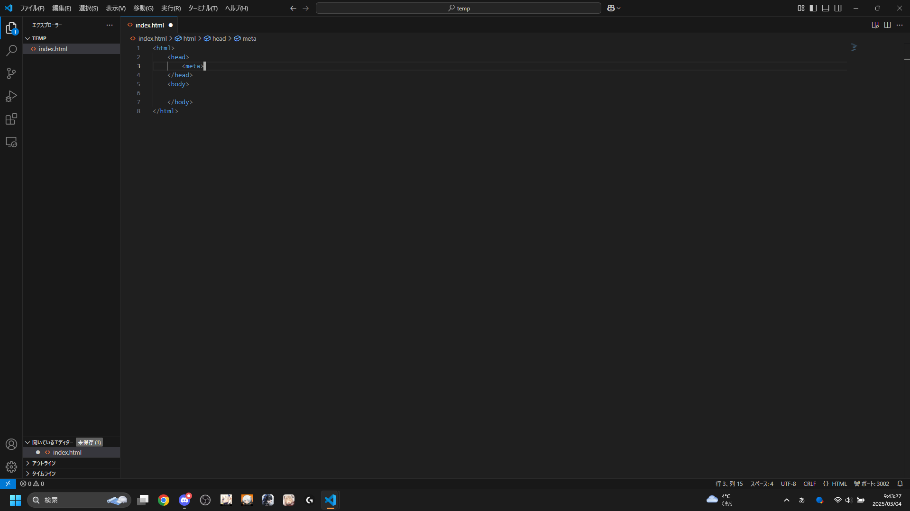

はじめに
どうもみなさんこんにちは。
こんな感じにブログを書くのは超絶久々なんですが継続できるように頑張ります。ということで、数年ぶりのブログで数年ぶりにHTMLのメモを残したいと思います。
誰かの薬に立つことができたらとても嬉しいです。
What's "HTML"？
HTMLとは、HTML(HyperText Markup Language)という略であり、ハイパーテキストを云々...
まぁざっくりいうとウェブサイトの基盤です、このサイトみたいに文字を表示したり画像を出したりする基盤です。
このHTMLがないとウェブサイトは成り立ちません。(例外はありますが基本的にHTMLがないとウェブサイトはできません。)
じゃあどうやってHTMLをやるんだい！！ってことで次の章で詳しく解説していきます。
HTMLの簡単な書き方について
HTMLについてざっくりと解説したので、この章では"HTMLの書き方"について解説していきたいと思います。
私自身あまり詳しいとは言えないので結構あやふやな部分があるんですけど、まぁ私自身のメモ程度に見てください...
HTMLを書く方法はすーっごく簡単です。
index.htmlファイルを作成→タグを書く→ウェブで表示
これだけの簡単なステップで書くことができます、そこら辺のプログラミング言語よりデバッグも簡単！
まぁ...CSS(Cascading Style Sheets)とかいうのを使い始めるとなかなか苦戦します...
今はHTMLの解説なので省きますけどね、いずれ解説するはず...
ではまずhtmlファイルの作成を行います。
私の開発環境はVS Code(Visual Studio Code)にて行います。コーディングは大抵VS Codeで行っているので環境を合わせたい人は各々インストールしてくださいね。
VS Codeを開いたら右上のファイルマークを押してエクスプローラーを開きます。(画像参照)
エクスプローラーを表示できたら"フォルダーを開く"をクリックして、任意の場所のフォルダを選択して開きましょう。
すると画像のようになると思います。
そしてフォルダ名の場所にマウスを持っていくと色々出てくると思うので、ファイルマークをクリックして新規ファイルを作成してください。
ファイル名は"index.html"にしましょう、まぁ公開したりしないよって人は何でもいいと思います。
"index.html"を作成できたらここからはタグについての解説をしていきますよ！！
下準備は終わったのでもうほぼ終わったも同然ですね。
{kind=link}
HTMLのタグについて
HTMLは数多のタグを使いこなしてなんぼっていう感じのものになります。
最初は簡単な「Hello, World!!」を表示させてみたいと思います。
Hello, World!!の出力自体はとてもシンプルです。
画像のように"Hello, World!!"と入力するだけでも出力はされます。
だがしか～し！！そんなことを知ったところでって感じなのでもっと細かく書きましょう。
最初は必ずhtmlタグで囲います。
その後にheadタグを追加しましょう。headタグを追加することにより今後出す予定のCSSっていうものが使えるようになったりします。絶対入れましょう。
headタグの下にbodyタグを追加しましょう。bodyタグを追加することで本格的なhtml文章の作成が始まります。
以上で基本的なhtmlの構造を記述することができました。簡単にまとめると、HTMLを始めるならまずhtmlタグを書く→中にheadタグとbodyタグを書く。
という順番で記述しましょう！！
以上htmlでの基本的な記述でした。次の章ではheadタグについて書いていきます。
headタグについて
headタグとは、簡単に言ってしまえばサブコンテンツ的なものです。タブのタイトルだったりCSSファイルの指定だったりショートカットアイコンだったり...etc
JavaScriptを記述したファイルをhtmlに読み込ませたりcssを記述したファイルをhtmlに読み込ませるならheadタグ内に書くのが一般的です。(ただしJavaScriptに関してはbodyタグ内に書く記事もありますが私個人の好みとしてはheadタグ内に書いたほうが見やすいので良いと思います。)
headタグの用途は主に、先程の記述した通りCSSの読み込みとJavaScriptの読み込みに加え、タイトル名の変更やサイト説明など本文以外の機能を使うための場所になります。
その記述方法について解説していきます。
headタグの書き方を知ろうの会
headタグの書き方は至って単純です。headタグで囲まれた場所にmetaタグやlinkタグやその他タグを記述するだけです。
使用可能タグは以下に...
-
1,<meta>
2,<link>
3,<title>
4,<script>
5,<style>
以上5点+属性各種でhead内を構成します。metaタグ・linkタグ・titleタグは必ずと言っていいほど使うので覚えておきましょう。使わないウェブサイトは多分実験的なウェブサイトか個人的に楽しんでいるものだとおもいます、わかりませんけどね...
じゃあそのタグの書き方は？ってことで今から紹介しましょう。私もあまりmetaタグは知らないのでこれを期に覚えたいと思います。紹介する順番はリスト通りに進行していきます。
metaタグの書き方は画像の通り

metaタグは囲うものではなくそれ単体で機能するタグなので終了タグは不要。metaタグ内に属性を入れることで機能するタグです。
1．<meta charset="UTF-8">
このタグはhtml内で日本語を使う上で必要な文字エンコードを宣言するmetaタグです。これを使うことで文字化けを防ぐことができます。まぁ入れない状態で作っても文字化けしたことないんですけど一応入れておきましょう、無くて困るよりは全然いいのでね。
2．<link rel="stylesheet" href="cssのパス">
このタグはhtmlで適応させるcssを指定するlinkタグです。これはcssを外部ファイルとして保存している場合に使います。基本的にhtml上より外部ファイルとしてcssを付けたほうが見やすい＋修正もしやすいのでおすすめです。それとこのタグもmetaタグと同じで終了タグは不要。
3．<title>タイトル名</title>
このタグはGoogle検索などの検索結果に出てくるタイトルやページタブの名前に使われます。デフォルト(titleタグが無い場合)では、このhtmlファイルの名前として表示されます。好きな名前で公開したい場合は必ずこのタグを使いましょう。
4．<script src="javascriptのパス">
このタグは外部ファイルに保存したJavaScriptを読み込むために使います。<head>内に書くか<body>&内に書くかで色々記事が別れているんですけど個人的には<head>に書いたほうが見やすいと思います。あくまで個人的な意見ですけど、機能的には何も問題は無いはずなので...
5.<style></style>
3番で紹介した外部ファイルからcssを読み込むタグを使わない場合はこのタグを使ってスタイルを付けます。私個人はあまり使ってないんですけどね...(PCで見ている人はF12を押してソースコードを見てくれるとわかりますがhtml上でstyleを使っている部分はほんの少ししかないです。)
雨宮とあ

プロジェクトから逃げる一般高校生。
最近はVRChatと音ゲーをやってる。
HTMLでのサイトコーディングをまともにやったのがこのサイト...らしい。
Minecraftのアドオン作りもやってたけどバージョンアップしてから分からなくなって諦めた。